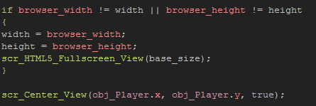

Tutorial
Page 8 of 15
HTML5 Fullscreen Scaling
This final page dedicated to the HTML5 target covers one further way to scale the game canvas... Fullscreen! Now, you cannot set fullscreen mode directly through GameMaker:Studio as this is browser
dependant and requires implicit user input. However you can scale the canvas to fill the browser.
You can get a nice proportional scaling from our previous objects by simply setting the width and height variables in the Step Event code block to be the same
as the browser width and height, but this will not give us a "true" fullscreen effect like that achieved on Windows with the object obj_Windows_Fullscreen_2. So we are going to code that now, so that
your game will always occupy the full browser window, and have the view scale accordingly.
Before getting started it's important to realise that the minimum view width and height cannot be fixed like they were previously. All we can do is set a value whereby the view will not get any smaller,
but start to be cropped. Think about it like this... the browser can be stretched to fit any proportion from a very narrow rectangle to a perfect square, and so we have to take this into account and create
a "best fit".
So, to get this working correctly, we have to choose a single value that will be the minimum width or height that the view will be scaled to. To see why, take a look at this diagram:

To set this up requires another new script, so add a script asset and name it scr_HTML5_Fullscreen_View. This is the script that will do all the work for us, and as you will see it is remarkably similar to
previous scripts in that it is all down to the aspect ratio that we use. However, for this we need the aspect ratio of the browser, as that is what will determine whether the view is scaled to the base size
along its width or its height. The necessary code to add is:
The argument0 here will be the base size that we set, so now save that script and add a Create Event to the object obj_HTML5_Fullscreen_Scaling with the following code:
This code sets the necessary variables then calls the script that we just created to prepare the views to the current browser width and height. Now we need a Step Event to control any changes, so add
one now with the following:

And that's it! Run the game and test changing the browser size. Note that the view has been limited to the room width and height using our view center script, but this is not neccesary if you don't want it.
Click on the Next button to go to the next page of the tutorial.